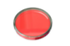
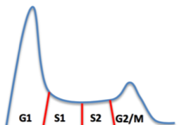
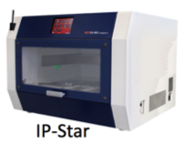
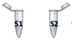
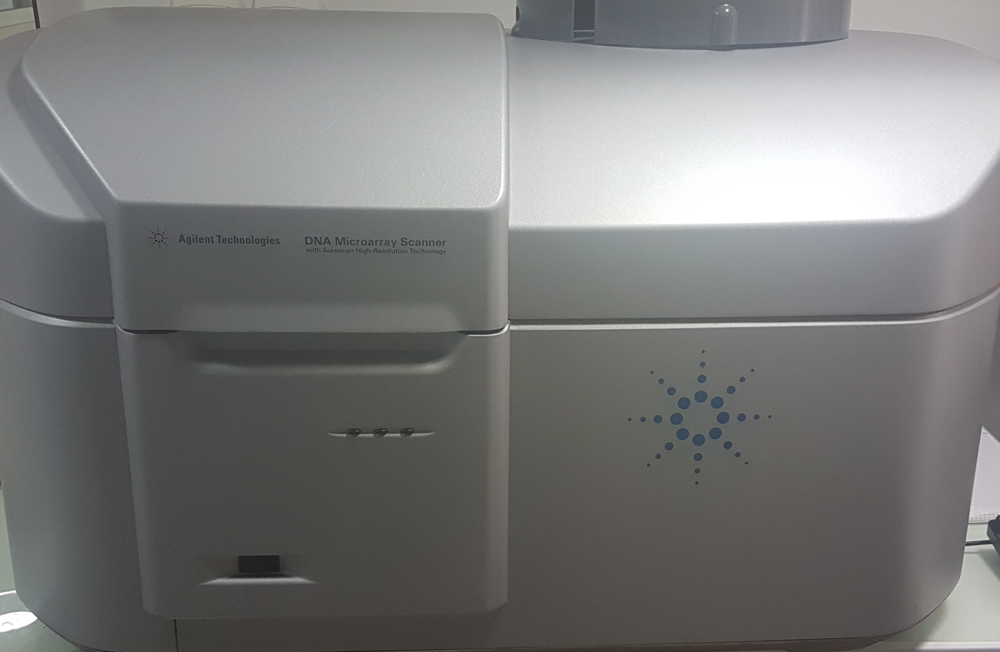
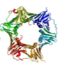

Usually, the protocol developed to analyze genome-wide replication-timing program in mammalian cells lasts 3 weeks (Ryba et al., 2011). The BrdU immunoprecipitation is a time consuming step and need to be carefully monitored in order to get most precise and specific signals. Here, we modified the previous protocol by introducing an automated step using the SX-8G IP-Star® Compact Automated System to perform the BrdU immunoprecipitation step (DNA-IP). This accelerated the protocol and improved the reproducibility of the DNA-IP experiment. Indeed, the automated system allows performing DNA-IP overnight and reduces the signal-to-noise ratio. It also provides high standardization of the DNA-IP step, allowing strong reproducibility of RT profiles from one experiment to another.
1
We first label exponentially growing cells with BrdU and fixe them. We mark cells using propidium iodide.
2
We sort cells in two fractions: early S1 and late S2 fractions with a flow activated cell-sorting system. We then extract DNA using a phenol chloroform protocol.
3
We proceed to the immunoprecipitation step with anti-BrdU antibodies and magnetic beads using the IP star robot from Diagenode.
4
The DNA obtained is then amplified and labeled with two different dyes for the early and the late fractions.
5
Same amounts of both fractions are hybridized on a DNA chip. The chip is then scanned.
6
The intensity of each probe is extracted using the Agilent feature extraction software. We finally obtain a CSV file containing the genomic coordinates and the Cy5/Cy3 ratio for each probe.
7
We use START-R analyzer and viewer.
